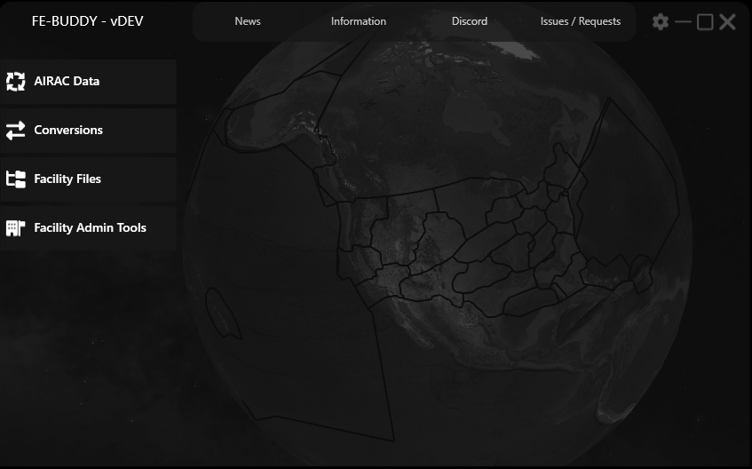

Overview

FE-Buddy is a valuable tool designed for VATSIM/VATUSA ARTCC Facility Engineers. It simplifies the creation, editing, and maintenance of facility files like GeoMaps, RADAR video maps (RVMs), and alias command files. Additionally, FE-Buddy offers the ability to convert FAA GeoMaps, RVMs, and NASR data into GeoJSON files, which can be seamlessly used in the CRC program. The program boasts several essential features:
-
AIRAC Update:
Keep your software current with the latest FAA NASR data. Options include comprehensive or custom updates, saved user preferences, and GeoJSON file customization.
-
FAA RADAR Video Maps Conversion:
Streamline the conversion of real-world RADAR video maps from .DAT and .KMLZ files. Customize your point of tangency (POT) options and retain distance settings for batch processing.
-
FAA GeoMap Conversions:
Transform FAA ERAM GEOMAP data into versatile GeoJSON files. Export options include GeoMap Object Description, Filter Assignment, or Identical Attributes. Log files provide detailed insights.
-
.SCT2 File Conversion:
Convert .SCT2 files into usable GeoJSON files. Export section titles and include exceptions for SID and STAR sections.
-
Create GeoJSON:
Empower users to craft custom GeoJSON files with a user-friendly interface. Supports features like line string breaks.
-
GeoJSON Cleanup:
Optimize GeoJSON files for CRC use by setting default values, cascading code, and combining features for cleaner code.
-
Procedure ISR:
Access a quick-reference guide for controllers, referencing procedures from the d-TPP MetaFile. Pre-fill available information and customize fields as needed.
-
Settings Menu:
Customize your program experience with general settings. Manage notifications and preferences for optimal control.
History and Credits
FE-Buddy has an interesting history of development, stemming from the desire to automate the Facility Files updating process:
- In 2020, Nikolas and Kyle initiated their journey to automate the Facility Files updating process, focusing on providing monthly AIRAC cycle updates for the vZLC ARTCC.
- Recognizing the potential for broader utility, they expanded the project's scope, aiming to create a tool accessible to all ARTCCs.
- The early stages of FE-Buddy, specifically pre-version 3.0, were characterized by the rapid development of foundational functionality. The program's growth was a learning experience, with an emphasis on acquiring C# skills and adhering to coding best practices.
- In 2023, a comprehensive rebuild of FE-Buddy was initiated. This ongoing effort aims to enhance the program's functionality, user experience, and maintainability.
Special thanks to the following contributors for their roles in the development and success of FE-Buddy:
- Nikolas Boling - Primary Developer and Programmer
- Kyle Sanders - Concept Design and Original Author
- Kyle Rodgers - Developer and Antimeridian Split Logic
- John Lewis - Icon and Logo Design
- Chris James - Program Name
- Cian Ormond - dotNET 6 Conversion Assistance
- Caelan Sayler - dotNET 6 Conversion Assistance and Clowd.Squirrel Development
- Ian Drake - FAA FOIA RVM Conversion source code reference
System Requirements
FE-Buddy operates on Windows OS (8.1 or newer).
Issues or Feature Requests
Before reporting a new issue or making a feature request, please check if someone else has already submitted a similar request. This helps avoid duplicates and streamlines the process. You can browse the existing issues by visiting the FE-Buddy GitHub Issues page. This page displays all the open issues, making it easy to see if your concern has already been addressed.
Step 1: Check Existing Issues
Before reporting a new issue or making a feature request, it's a good practice to check if someone else has already submitted a similar request. This helps avoid duplicates and streamlines the process.
- Visit the FE-Buddy GitHub Issues page.
- Click the "New Issue" button.
- You will be presented with issue templates. Choose the relevant template based on your concern:
- If you are experiencing a problem or bug, select "Bug report."
- If you have a new feature or enhancement in mind, choose "Feature request."
- Fill out the provided form with as much detail as possible:
- Describe the issue or feature request clearly and concisely.
- Include information about your operating system, FE-Buddy version, and any relevant context that might help the developers understand your request.
- Once you've filled out the form, click the "Submit new issue" button.
Step 2: Interact with Developers
After submitting your issue or feature request, the FE-Buddy development team will review your submission. You may receive follow-up questions or updates on the progress of your request directly on GitHub.
Please provide any additional information or feedback requested by the developers to help expedite the resolution of your concern.
AIRAC Updates
FE-Buddy will assist Facility Engineers in the updating of their facility files and procedures by gathering upcoming AIRAC data and compiling it into required formats such as Alias, geoJSON, and Procedure Change files.
FAA Chart Recall Aliases
Overview
- FILE: FAA_CHART_RECALL_ALIAS.txt
- DESCRIPTION: The user inputs a command with a syntax that contains the procedure ID or name, and it results in the users default webbrowser opening the FAA chart for that procedure.
- SYNTAX: Variable; Explained below.
- INCLUDED:
- Takeoff Minimums/Obstacle Departure Procedure Page
- Diverse Vector Area Page
- Hot Spots Page
- Land and Hold Short Operations Page
- Airport Diagrams
- DP/STAR Plates
- IAP Plates
- NOTE: For the purpose of these commands, "APT" is meant as the FAA ID for the airport.
Takeoff Minimums/Obstacle Departure Procedure Page
- SYNTAX: .<APT>TMC
- EXAMPLE: .SLCTMC
Diverse Vector Area Page
- SYNTAX: .<APT>DVAC
- EXAMPLE: .SDLDVAC
Hot Spots Page
- SYNTAX: .<APT>HSC
- EXAMPLE: .EDFHSC
Land and Hold Short Operations Page
- SYNTAX: .<APT>LHASOC
- EXAMPLE: .BZNLAHSOC
Airport Diagrams
- SYNTAX: .<APT>APDC
- EXAMPLE: .SLCAPDC
DP/STAR Plates
- SYNTAX: .<APT><PROCEDURE ID without version number>C<page number, if not 1>
- EXAMPLES:
- .DENAALLEC
- .DENAALLEC2
- .DENAALLEC3
DP/STAR Plates - Without FAA Assigned Computer Code
- SYNTAX: .<APT><first 5 characters of procedure name (no spaces)>C<page number, if not 1>
- EXAMPLES:
- TNX-TUMBE ONE
- .TNXTUMBEC
- TTD-BLUE LAKE THREE
- .TTDBLUELC
- GEG-SPOKANE SIX
- .GEGSPOKAC
- GEG-SPOKANE, CONT. SIX
- .GEGSPOKAC2
- TNX-TUMBE ONE
Instrument Approach Plates
- SCRATCHPAD (SPad) CODE INFO:
- This collection of codes is intended to be utilized FAA-wide and formatted in an intuitive manner.
- The idea is to attempt to keep every code limited to 3 characters, while allowing an increase to 4 characters when the situation requires. Never will you see a 5 character SPad Code.
- When creating a general syntax for such a dynamic library of approaches, there will be limitations; Some approaches were not included in this colletion such as PRM, SA CAT (i,ii,iii), HI-, BACK COURSE, LOC/NDB/COPTER, CONVERGING ILS, and GLS.
- When a Runway number must be shortened, the last digit in the runway number is used along wiht the parallel/type runway (L/C/R/G/W) designator, if there is one.
- The only time you will see a 4 character SPad code is when there is a Variant, 2-digit runway number, and a L/C/R designator.
- SYNTAX: .<APT><IAP SPad Code>C
| APP TYPE | ABBREVIATION |
|---|---|
| Visual | V |
| Contact | C |
| ILS | I |
| LOC | L |
| RNAV | R |
| GPS | G |
| VOR | O |
| NDB | N |
| SDF | S |
| LDA | D |
| TACAN | T |
| VOR/DME | F |
| LOC/DME | K |
| ILS/DME | J |
| NDB/DME | D |
| LDA/DME | A |
| TYPE | VARIANT | RWY | SPAD CODE |
|---|---|---|---|
| ILS | 10 | I10 | |
| ILS | Y | 10 | IY0 | ILS | 28R | I8R |
| ILS | Y | 28R | IY8R |
| VOR | 12 | O12 | |
| VOR | B | OB | |
| RNAV | 04 | R04 | |
| RNAV | X | 04C | RX4C |
| LOC/DME | Z | 18L | KZ8L |
| AIRPORT | APPROACH | COMMAND (SPad = RED) |
|---|---|---|
| SLC | ILS RWY 16L | .SLCI6LC |
| SLC | LOC RWY 16L | .SLCL6LC |
| ENV | RNAV-A | .ENVRAC |
| XSA | RNAV (GPS) RWY 10 | .XSAR10C |
| EKN | LDA-C | .EKNDCC |
| SFO | RNAV (RNP) Y RWY 28R | .SFORY8RC |
| SFO | RNAV (RNP) X RWY 28R | .SFORX8RC |
Charted Visual Instrument Approach Plates
| AIRPORT | APPROACH NAME | SPad |
|---|---|---|
| SFO | QUIET BRIEDGE VISUAL RWY 28L/R | .SFOVQBC |
| SFO | TIPP TOE VISUAL RWY 28L/R | .SFOVTTC |
| SJC | FAIRGROUNDS VISUAL RWY 30L/R | .SJCVFC |
| ASE | ROARING FORK VISUAL RWY 15 | .ASEVRFC |
Multi-Page Instrument Approach Plates
- .SEARZ6CC
- .SEARZ6CC2
Content Display
AWY_FIXES_ALIAS.txt
- DESCRIPTION: The user inputs a command containing the airway ID, and it results in the display of all the fixes for that airway.
- SYNTAX: .<AIRWAY ID>F
- EXAMPLE: .J16F
STAR_DP_FIXES_ALIAS.txt
- DESCRIPTION: The user inputs a command containing the STAR/DP without the version number, and it results in the display of all the fixes for that airway.
- SYNTAX: .<APT ID><STAR or DP ID>F
- EXAMPLE: .DTWTPGUNF
In-Scope Reference (ISR) Aliases
ISR_APT_ALIAS.txt
- DESCRIPTION: The user inputs a command containing the airport ID, and it results in a message returning to the user in the CRC text communications window with details concerning that airport.
- SYNTAX: .APT<APT FAA or ICAO ID>
- EXAMPLE: .APTJFK
ISR_NAVAID_ALIAS.txt
- DESCRIPTION: The user inputs a command containing the NAVAID ID or name (without spaces or special characters), and it results in a message returning to the user in the CRC text communications window with details concerning that NAVAID.
- SYNTAX: .NAV<NAVAID ID or Name without spaces and special characters>
- EXAMPLE: .NAVJHW
ISR_TELEPHONY.txt
- DESCRIPTION: The user inputs a command containing the 3LD or name (without spaces or special characters), and it results in a message returning to the user in the CRC text communications window with details concerning that telephony.
- SYNTAX: .ID<3LD or Name without spaces and special characters>
- EXAMPLES:
- .IDNKP
- .IDABAKANAIR
Alias Test File
ALIAS_TEST_FILE.txt
- DESCRIPTION:All alias output data will be combined into this file for easier testing or simple copy/paste into your facility file.
Duplicate Commands File
DUPLICATE_COMMANDS.txt
- DESCRIPTION:The alias syntax is unable to account for every situation that would create a duplicate command for two different charts and therefore, the local Facility Engineer will need to create a cusom command for these situations and that is placed prior to these commands in the alias file. This file will assist in this process.
Publications
PROCEDURE_CHANGES.txt
- DESCRIPTION:This file lists all changes that are happening to an airport under the jurisdiction of the selected ARTCC. A link to the PDF Compare page will also be provided if the FAA provides one.
- DESIGNATORS:
- C - Procedure has changed.
- A - New procedure (added).
- D - Removed procedure (deleted).
- NOTE: In some cases, the link will return a 404 error. This is because the FAA does not have a comparative document, as common with DOD facilities.
PROCEDURES.txt
- DESCRIPTION:A list of all airports and a link to their procedures for the selected ARTCC.
<ARTCC ID>_AIRPORTS.csv
- DESCRIPTION:Lists all of the airport under the jurisdiction of the selected ARTCC. Left of the comma is the FAA ID, to the right of the comma is the ICAO ID if there is one.
Airports Video Maps
APT_SYMBOLS.geojson
- DESCRIPTION: Displays symbols for airports.
APT_TEXT.geojson
- DESCRIPTION: Displays the airport ID and Name next to the symbol.
ARTCC Boundaries Video Maps
ARTCC_BOUNDARY_HIGH_LINES.geojson
- DESCRIPTION: Displays the High ARTCC Boundaries from NASR data as lines.
ARTCC_BOUNDARY_LOW_LINES.geojson
- DESCRIPTION: Displays the Low ARTCC Boundaries from NASR data as lines.
Airways Video Maps
AWY_HIGH_LINES.geojson
- DESCRIPTION: Displays the High Airways as lines.
AWY_HIGH_SYMBOLS.geojson
- DESCRIPTION: Displays the High Airways fixes and NAVAIDs as their respective symbols.
AWY_HIGH_TEXT.geojson
- DESCRIPTION: Displays the High Airways fixes and NAVAIDs ID/Name next to their respective symbols.
AWY_LOW_LINES.geojson
- DESCRIPTION: Displays the Low Airways as lines.
AWY_LOW_SYMBOLS.geojson
- DESCRIPTION: Displays the Low Airways fixes and NAVAIDs as their respective symbols.
AWY_LOW_TEXT.geojson
- DESCRIPTION: Displays the Low Airways fixes and NAVAIDs ID/Name next to their respective symbols.
Fixes Video Maps
FIX_SYMBOLS.geojson
- DESCRIPTION: Displays all fixes from NASR data as symbols.
FIX_TEXT.geojson
- DESCRIPTION: Displays all fix names from NASR data next to their symbols.
Runways Video Maps
RWY_LINES.geojson
- DESCRIPTION: Displays all runways from NASR data as a single line drawn from threshold to threshold.
Weather Stations Video Maps
WX_SYMBOLS.geojson
- DESCRIPTION: Displays all symbols from weather stations found in the weather.gov data and then cross matched with the NASR AWOS data as symbols.
WX_TEXT.geojson
- DESCRIPTION: Displays all weather station airport names next to the their symbols.
STAR and DP Video Maps
The STAR and DP video maps will be found in the subdirectory folders "STAR" and "DP".
<STAR/DP ID>_LINES.geojson
- DESCRIPTION: Displays all lines the respective STAR or DP.
<STAR/DP ID>_SYMBOLS.geojson
- DESCRIPTION: Displays all NAVAIDs/Fixes associated with the associated STAR or DP as their respective symbols.
<STAR/DP ID>_TEXT.geojson
- DESCRIPTION: Displays the IDs/Names of the NAVAIDs/Fixes for the associated STAR or DP next to their symbols.
Create GeoJSON
This feature will allow you to create a GeoJSON for use by CRC from scratch.
GeoJSON Clean-up
This feature will allow you to select your GeoJSON file and FE-Buddy will ensure it is cascaded to a single line, look for common errors such as duplicate defaults, and remove common 0.0,0.0 coordinates from legacy SCT2 file conversions.
Procedure ISRs
This feature will guide you through creating helpful in-scope references for your facility's procedures per phase of flight.
SCT2 to GeoJSON
Will convert a .SCT2 file to .GeoJSON(s) for use by CRC.
FAA RVM to GeoJSON
Will convert a FAA RVM .dat file to .GeoJSON for use by CRC. Later development will likely result in conversions of the FAA .KML(z) files as well.
FAA GeoMap to GeoJSON
Will convert a FAA GeoMap (ERAM) to .GeoJSON.